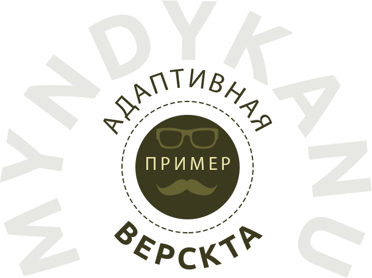

17 декабря 2019

Процесс верстки с нуля
Красивый код
Основы
HTML5
CSS3
RESPONSIVE
Превращать макет в код
Если вы до сих пор ломаете голову над тем, что следует за стадией дизайна - этот мастер-класс поможет вам собственноручно погрузиться в среду версткиРаботать с вектором
Сегодняшний веб невозможно представить без векторной графики, формата SVG и xml-формируемых документовРаботать отзывчиво
Адаптивные сайты стали нормой, и если вы не умеете их создавать, то теряете драгоценных клиентов и отстаете в развитии. Поправим ситуацию?Эффективному workflow
Виртуальная рабочая среда верстальщика должна быть продумана до мелочей, ровно как и сам процесс работы. Давайте построим эффективный workflow!Андрей Гаврилов
freelance.ru/prozrachno